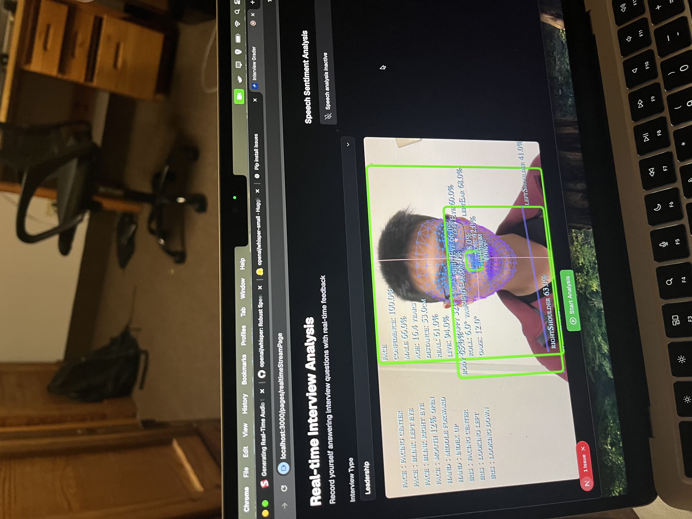

Interview Grader


An app that grades technical interviews automatically using Vision Language Models/
Whisper C++/ and CNN. Backend is synchronized and updated to S3 Bucket.
(SmolVLM 2.5B). It is sponsored by Lockheed Martin Corp.
Iron Condor Option Trading
A visualization dashboard for Iron Condor strategy using real-time stock markets.
Link to the project
Link to the project
Heart Rate detection

A simple tool using extracting peak signal in Green chanel at RGB images to detect
heart rate. The research work was inspired on how they measured heat during COVID-19.
Github
Github